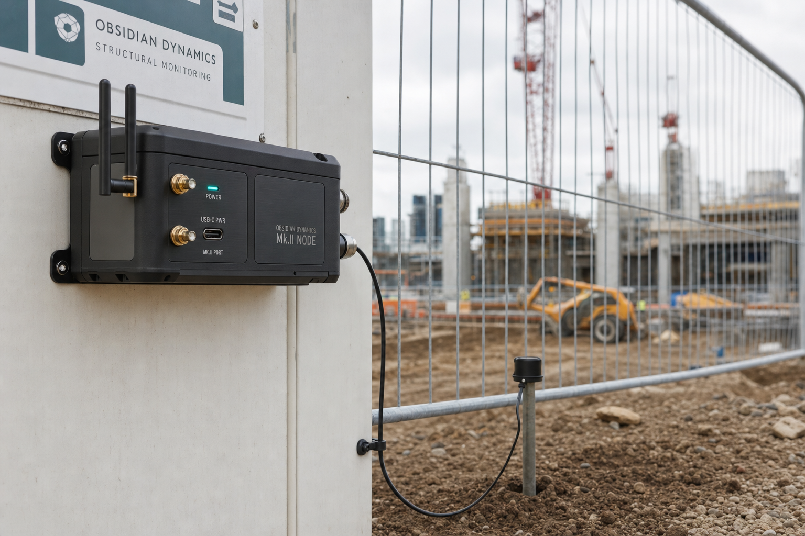

High-availability power
Industrial PSU paired with a Li-ion UPS and battery-management system. The node keeps measuring through mains interruptions and reports its own battery health to the platform.
RESEARCH PROTOTYPE · MK.II NODE
The Mk.II Node is a rugged, self-powered edge device built to explore how to capture noise, ground vibration and seismic activity, evaluate limits on-site, and stream data over 4G.
Power, compute and sensing are isolated so a fault in one domain does not take down the others.
Industrial PSU paired with a Li-ion UPS and battery-management system. The node keeps measuring through mains interruptions and reports its own battery health to the platform.
A sealed compute core with dual industrial 4G antennas. It buffers and evaluates thresholds locally, so connectivity drops do not create gaps in the record.
Military-style connectors accept a triaxial geophone, sound sensor and auxiliary inputs — feeding a single, consistent ingest pipeline.
Designed to install quickly on hoardings, cabins and structures, so it can be tested in the conditions it is meant for. It self-locates, connects, and starts reporting.

Mount the node, connect the geophone, power on. Auto site assignment maps it to the right site.
Heartbeats, live levels and breaches stream back; gaps are backfilled from the local buffer.
Push firmware over the air, watch battery and signal health, and triage without a site visit.
One node or several — each isolated and visible on a single map.
Each node is the edge of a small monitoring stack — capture and evaluate on-site, then turn readings into dashboards and a verifiable record.
Authenticated, buffered ingest. Readings are batched and backfilled so the record stays continuous through outages.
Day, evening and night thresholds for noise (BS 5228) and vibration (BS 7385), with working-hours rules.
Real-time breach detection with acknowledgement and time-based escalation to email, SMS or Slack.
Live dashboards, a fleet map, and signed PDF/CSV exports — hash-stamped for integrity, with a documented API.
LAeq and PPV against BS 5228 / BS 7385, with out-of-hours activity surfaced clearly.
Triaxial geophone capture for high-energy works, so spikes can be correlated with activity.
Distributed nodes across a corridor report to one map, each measured against its own limits.
Conservative limits beside heritage assets, with early-warning alerts and a hash-stamped trail.
The Mk.II Node is a research prototype. If you are working on similar problems in edge sensing or compliance monitoring, I am happy to compare notes.